Three days on from 7/10, the plant continues to look like a healthy Papaya Crush finishing on schedule: canopy still fully closed with no net gaps in any of the five overhead angles, colas visibly fatter, and pistils continuing to cream/tip amber on more tops than 7/10 — consistent with day ~40 heading into the ripening window. No stippling, webbing, powdery mildew, or bud-rot mush anywhere across all fifteen photos, including eight close-up/macro shots that would resolve early pest or PM signs. Direct answer to the big question: the leaf yellowing in this set reads, with moderate-to-good confidence, as normal late-flower senescence/nutrient remobilization, not a new deficiency requiring action. The reasoning: it is confined entirely to older, lower/interior fan leaves — every cola, every piece of new growth, and all sugar leaves on the photographed bud (img 14) stay deep green — and it has continued the exact trajectory this series has tracked since 7/1 (a few tips → several margins → one whole-leaf case on 7/10 → now a wider spread across at least six individually photographed leaves). That is the expected shape of senescence accelerating as harvest approaches, not a new insult appearing out of nowhere. That said, this is being reported strictly, not reassuringly: the extent (leaf count) has grown since 7/10 and the single most advanced case (img 4) is at least as severe as 7/10's whole-leaf example, one leaf shows a pattern textbook-associated with potassium deficiency rather than plain nitrogen fade, and the front-left-cola lighter-color item flagged 7/10 is now partly resolved: a direct PPFD reading at that cola came back just below 800, in line with the rest of the top canopy's established low-800s operating range rather than elevated the way the 6/22 ~1050 spike was — which argues against light stress as the cause, though no new close-up was submitted to confirm whether the leaf color itself has changed. All are detailed below rather than smoothed over.
TLDR — A manual close-up check-in, fifteen photos: eight close-up/macro shots specifically requested to help diagnose the yellowing flagged in the last two reports, five canopy-quadrant shots (bottom-left, top-left, top-center, top-right, bottom-right), one cola close-up, and one full tent/canopy overview. Compared against the last manual report, 7/10, and asked to answer whether the yellowing is senescence given harvest is ~2 weeks out, plus a read on cola development.
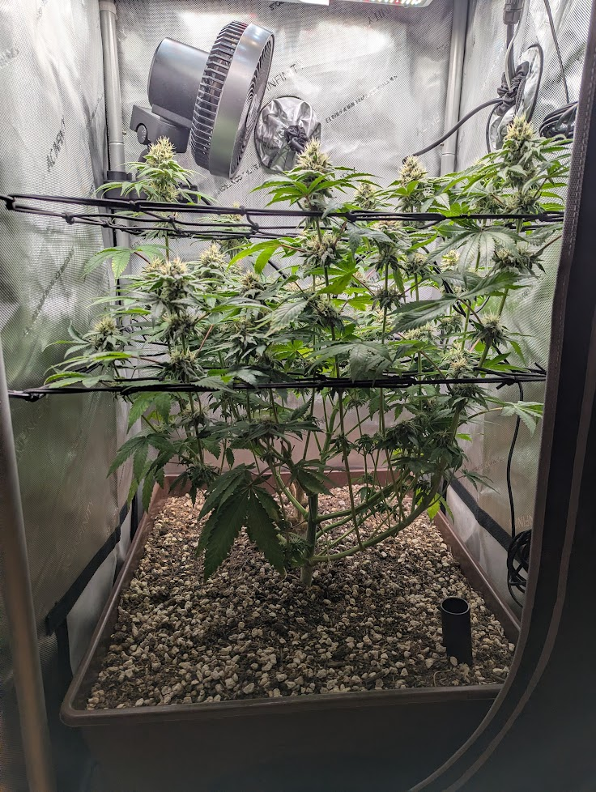
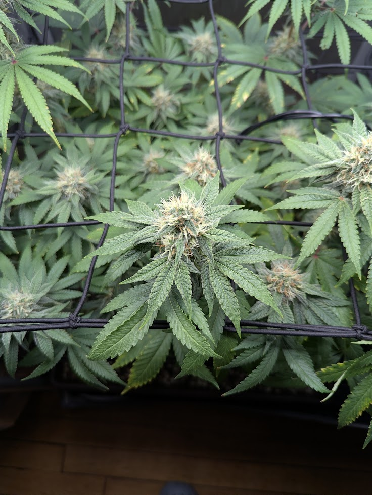
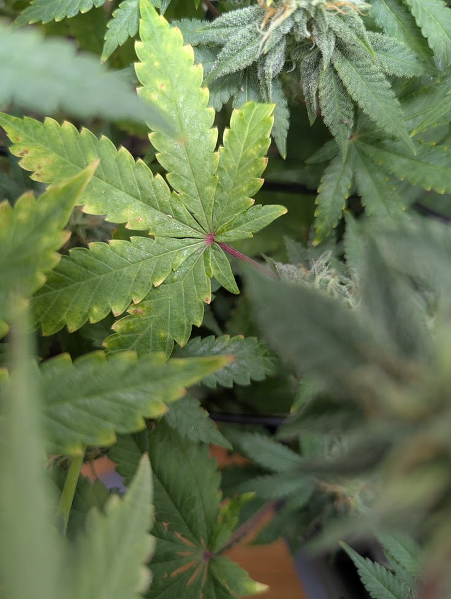
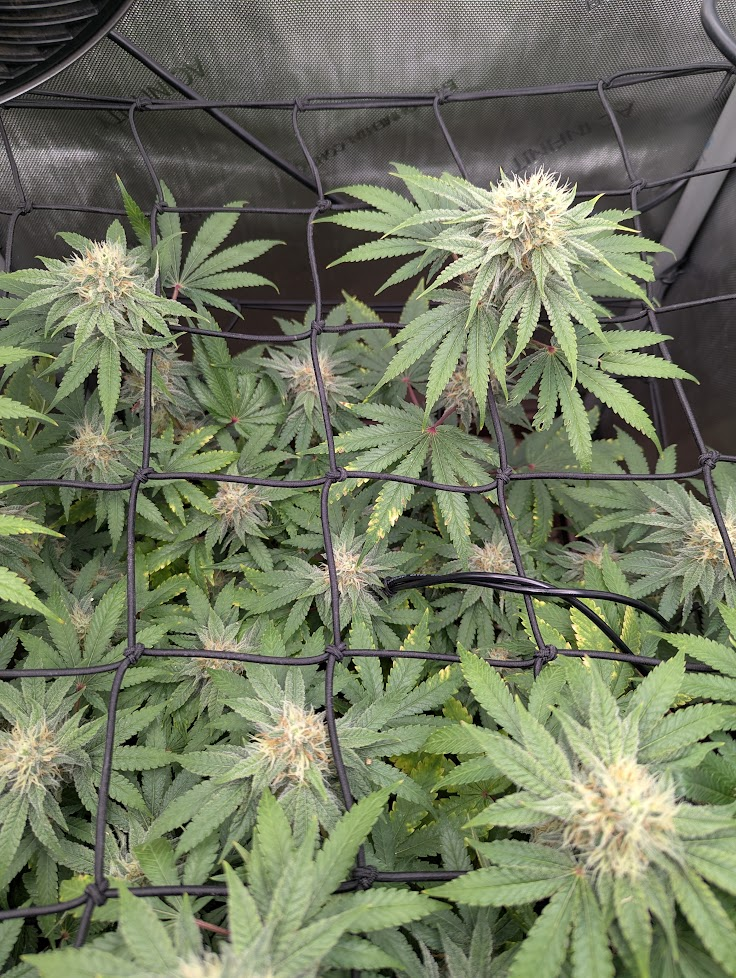
This is an estimate, not a precise count — roughly flat to modestly up from 7/10's ~30–42. The shape of the change has shifted: rather than new sites appearing, existing tops are visibly fattening further and more of them are transitioning from all-white pistils toward creaming/light-amber tips than on 7/10 (most visible in img 14 and img 15's lead colas) — consistent with the plant moving deeper into the front edge of ripening rather than continuing to add new bud sites. Method unchanged: counting distinct white/cream-pistil flowering tops in the overhead/quadrant shots, cross-checked against scrog-square occupancy. Overlap and occlusion still make an exact number unreliable from a photo — treat the trend, not the absolute figure, as the signal. For a true count, tally physically at a defoliation or count occupied scrog squares. (See manual_report_format.md.)
| Signal | 7/10 (day ~37) | 7/13 (day ~40) | Trend |
|---|---|---|---|
| Pistils / bud swell | Further fattened; pistils on the main colas denser, beginning to cream/amber at the tips on a few tops | More tops now show creaming or light-amber pistil tips (img 14, img 15's lead colas), continuing the same trend rather than a new development | ↑ better |
| Canopy fill | Fully solid overhead — no bare net squares visible | Still fully solid across all five overhead angles — no regression, nothing left to fill | → steady (already maxed) |
| Leaf color (tops / new growth / cola sugar leaves) | Deep green on tops and new growth across every quadrant | Still deep green on every top, every piece of new growth, and the sugar leaves on the photographed cola (img 14) — zero chlorosis at the growing points in any of the 15 shots | → steady |
| Leaf color (older/interior fans) | One fan leaf (top-right region) gone essentially whole-leaf yellow; continued tip/margin fading on other leaves | At least six individually photographed leaves (img 1, 4, 5, 6, 7, 8) span thin serration-traced margin yellow up through img 4's broad, near-whole-leaf pale chlorosis with minor marginal necrotic spotting — at least as severe as, and arguably beyond (added necrotic spotting), the single whole-leaf case on 7/10. Small patches of the same yellowing are also visible in 4 of 5 quadrant shots (9, 10, 11, 12, 13). This is not an isolated leaf anymore — the count of visibly affected leaves has grown in three days. | ↑ progressing (watch) |
| Pattern character | Fairly uniform yellow-green across the whole blade on the one advanced leaf — read as closer to a nitrogen-pattern fade | Mixed across leaves this round: some (img 5, 7, 8) show a thin yellow line tracing the leaf serrations — the documented early-tell pattern for potassium; others (img 1, 4) read as broader, paler chlorosis with retained darker venation. No single leaf shows one textbook single-element pattern, and the picture is more varied than 7/10's single case suggested. | new detail this round |
| Posture / turgor | Turgid and flat in all 11 shots, no clawing or tacoing | Same — turgid and flat in every shot, no clawing or tacoing anywhere, including the close-up hand shots | → steady |
| Pests / mold / PM | Clean in all 11 shots, including 4 macro close-ups | Clean in all 15 shots, including 8 close-up/macro frames (img 1, 4–8) at a resolution that would resolve stippling or PM powder — none found | → clear |
| Front-left cola color (7/10 watch item) | Flagged new — noticeably lighter/lime vs. rest of canopy, under the clip fan, same zone flagged 6/22/6/24 for elevated PPFD | Grower measured PPFD directly at this cola: just below 800 — in line with the low-800s the top canopy has been deliberately run at since the 6/28 light adjustment, not elevated the way the 6/22 ~1050 reading was. This weakens light stress as the explanation. No new close-up submitted, so the leaf color itself is still unconfirmed. | light ruled out as likely cause; color unconfirmed |
| Watering | Soil/perlite surface read dry; day 2 of the 7/8 top-dress's ~4-day cycle | Grow-context log shows a watering on 7/11 (between 7/10 and today); no soil-surface or side-profile shot in this set to visually confirm current moisture | watered once since, current state unverified |
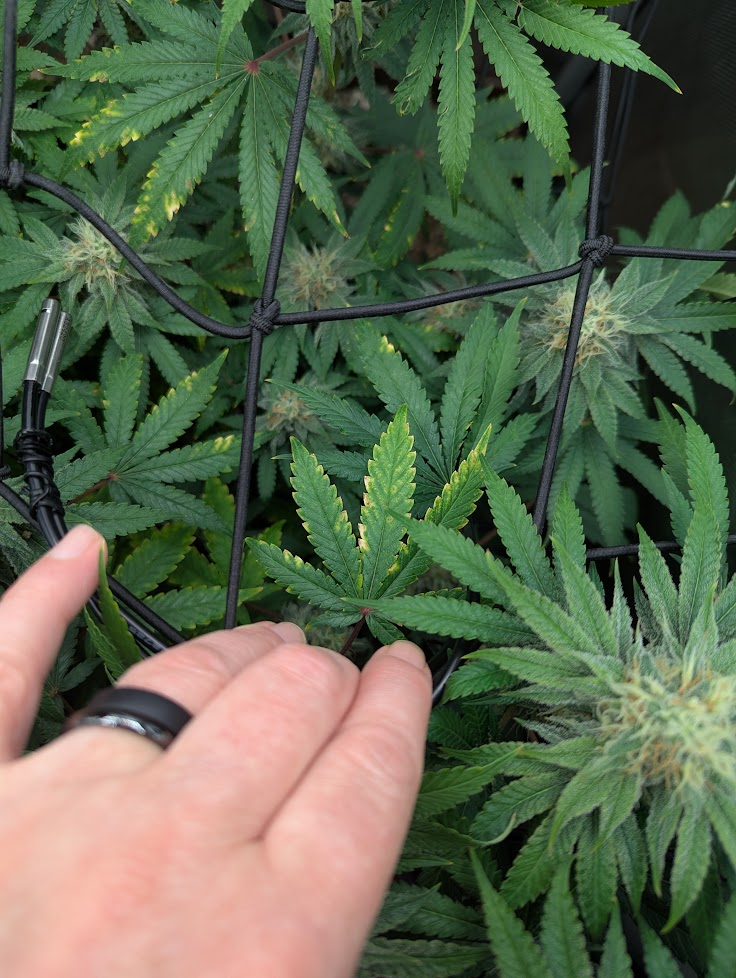
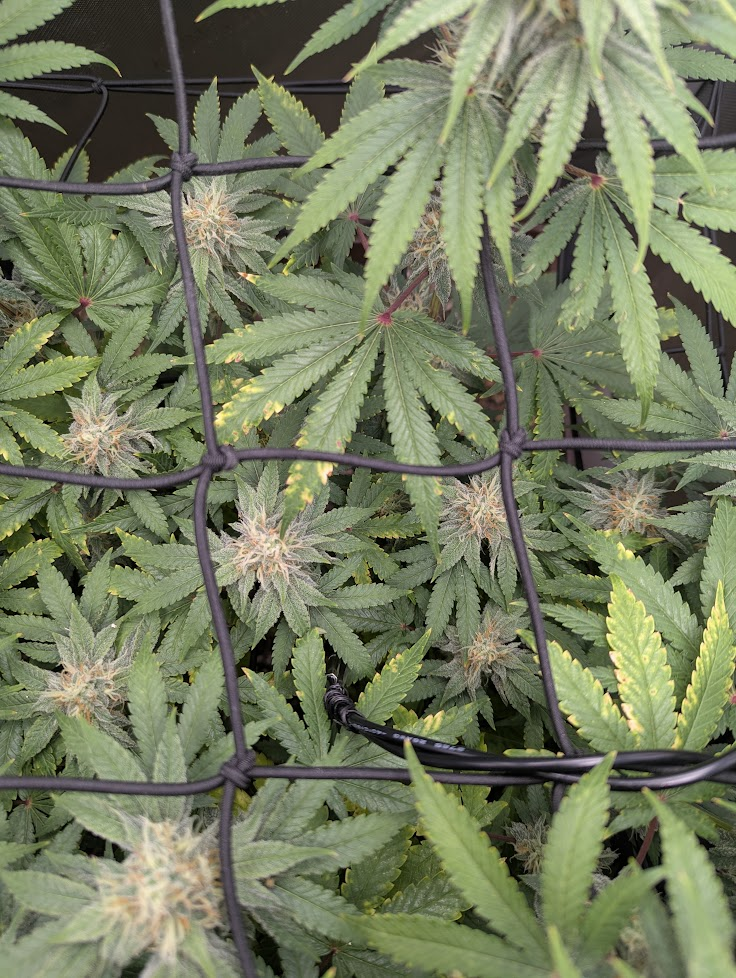
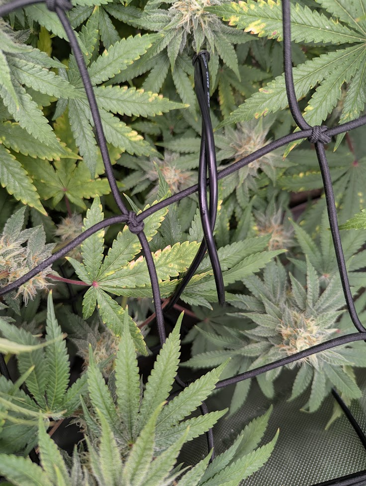
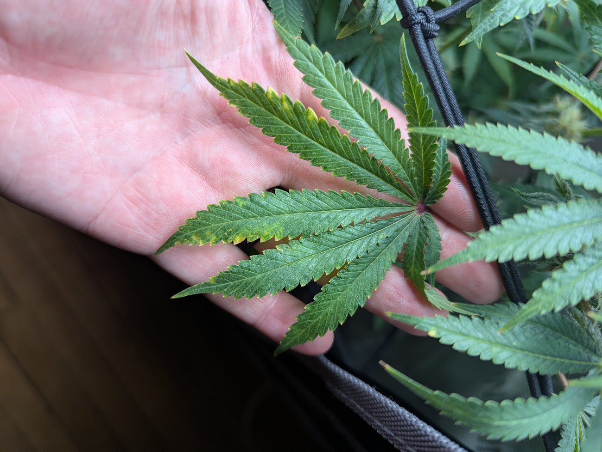
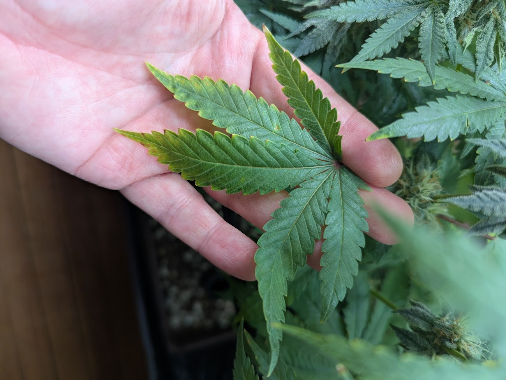
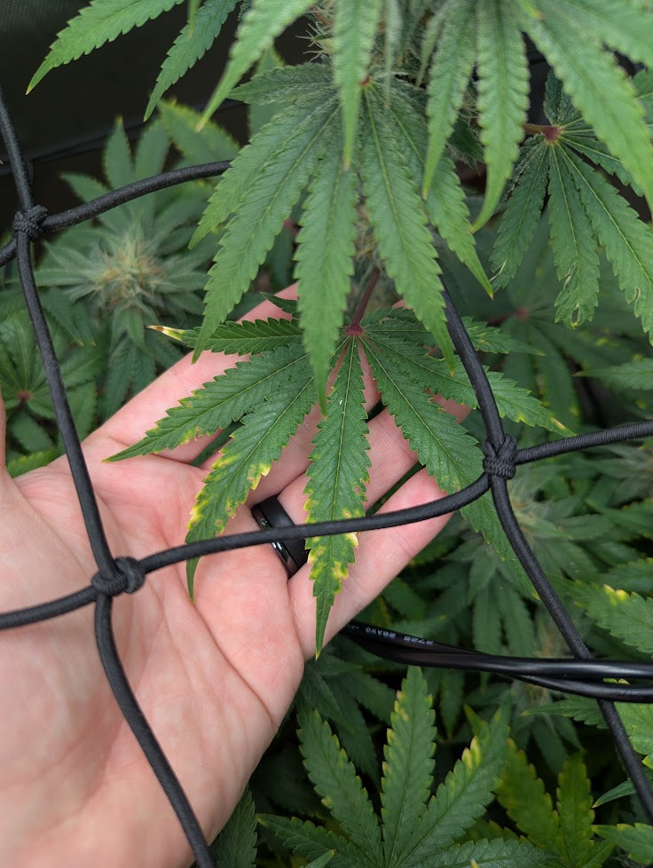
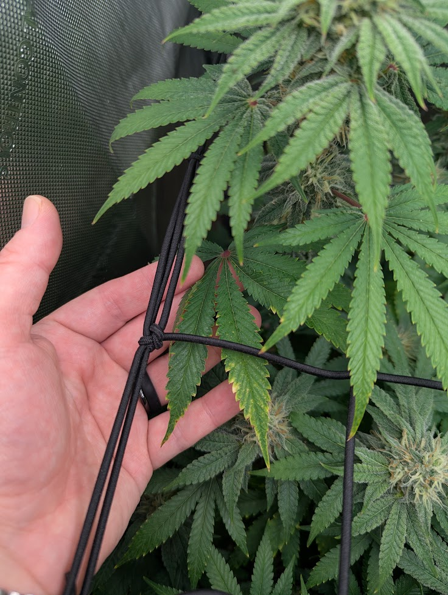
All eight are consistent with each other and with the rest of the canopy: every affected leaflet sits on an older, lower/interior fan leaf, never on new growth. None of the eight shows the sharp, uniform interveinal pattern with bright-green veins that would point cleanly to magnesium, nor the twisted/spotted new-growth pattern of calcium or zinc. The mix of a serration-traced margin pattern (img 5, 7, 8) alongside broader pale chlorosis with retained venation (img 1, 4) is itself informative: a true single-element deficiency usually presents one dominant, repeatable pattern across affected foliage; seeing two different patterns across different leaves on the same plant, at the same time, in the same location class (old/shaded fans), is more typical of generalized senescence pulling multiple mobile nutrients (N, K, Mg) out of the oldest leaves at once than of one specific shortfall (02-deficiencies.md02 · Nutrient Deficiencies & ToxicitiesAlways run the framework first (pH/watering, then location). Fixes below assume a synthetic/bottled-nutrient grow; for living soil, see 07 (the remedy is amendments/teas, not a bottle).Covers: Mobility cheat sheet · Mobile nutrients · Immobile nutrients · Toxicities & overfeeding · Hard ruleGrowBuddy knowledge base · 02-deficiencies.md, 01-diagnosis-framework.md01 · Diagnosis FrameworkThe method for turning "something looks off" into a calibrated diagnosis. Work the steps in order; do not jump to a nutrient name from leaf color alone.Covers: Step 0 — Gather context (decides most cases) · Step 1 — Rule out pH / lockout and watering FIRST · Step 2 — Localize the symptom (mobile vs immobile) · Step 3 — Characterize the pattern · Step 4 — Disambiguate look-alikes · Step 5 — Output: diagnosis, confidence, assumptions, sourcesGrowBuddy knowledge base · 01-diagnosis-framework.md).
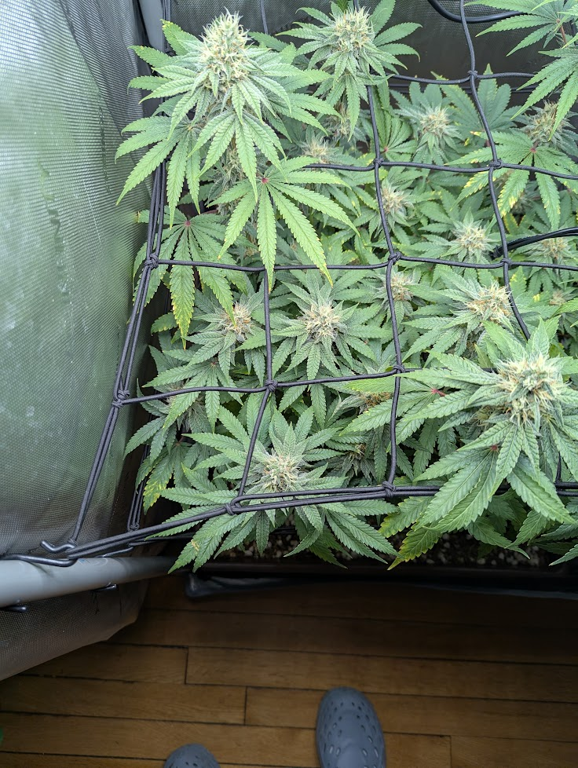
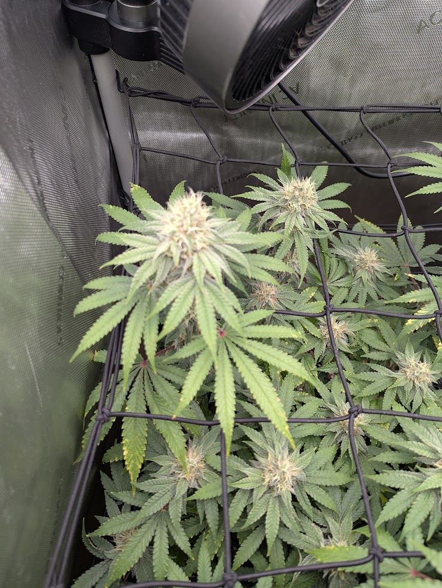
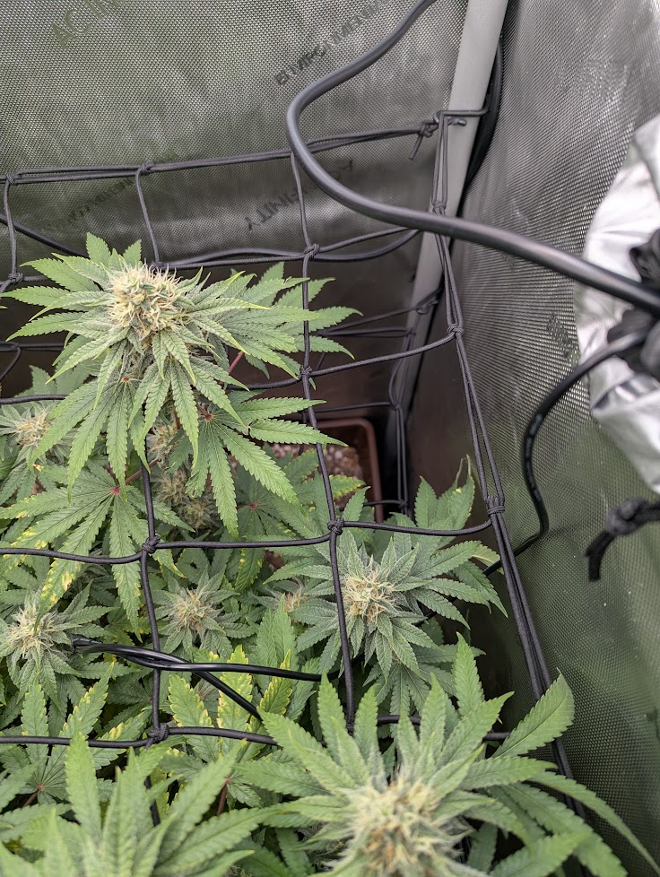
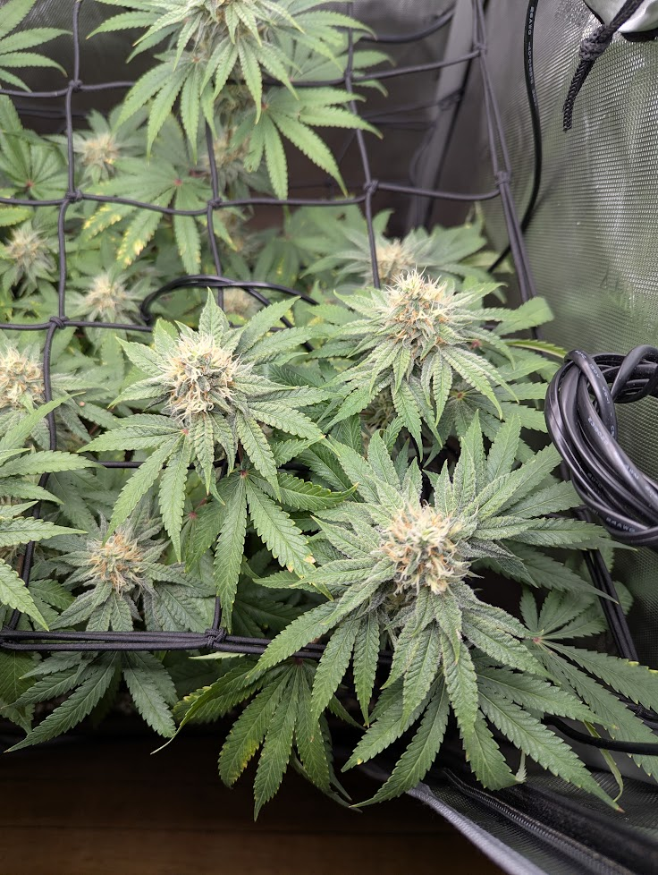
Every quadrant, the cola close-up, and the overview read healthy at the growing points: deep green, frosty, dense pistil clusters, and no webbing, stippling, powder, or gray fluff anywhere. The only recurring finding is the same older/interior-fan yellowing addressed in 5a, visible in smaller amounts within four of the five quadrant frames — confirming the close-ups are representative of a real, canopy-wide pattern on old growth, not a cherry-picked worst case.
grow_context.md plus ordinary lower-leaf drop this late in flower, not a new problem. Per the no-till approach for this grow, no cleanup of that lower stem zone or the root crown is warranted or suggested.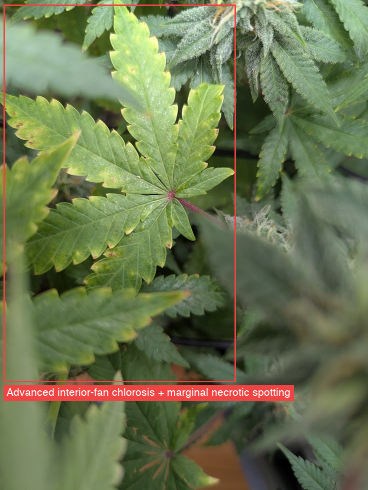
Answering the big question — is this senescence? Most likely yes, with moderate-to-good confidence. Three points support it: (1) altitude — every affected leaflet across all 15 photos is on an older, lower/interior fan; every cola, every new-growth tip, and the photographed bud's own sugar leaves (img 14) stay deep green, with zero exceptions found. (2) timing — at day ~40 and ~2 weeks from harvest, the plant is exiting bulking and entering the ripening window, exactly when the knowledge base documents accelerating fan-leaf fade as the plant reclaims mobile nutrients for the bulking/finishing buds regardless of soil richness (06-grow-cycle.md06 · Grow Cycle — What's Normal WhenKnowing the stage prevents false alarms (e.g., late-flower leaf fade is normal, not a deficiency) and sets expectations. Timelines are typical photoperiod ranges; genetics vary.Covers: Stages · Photoperiod vs Autoflower (critical distinction) · Whole-plant & structural issues (not a leaf symptom) · Harvest timing (trichomes)GrowBuddy knowledge base · 06-grow-cycle.md). (3) pattern heterogeneity — different affected leaves show different color patterns (serration-margin vs. broader pale chlorosis) rather than one uniform signature, which fits multiple mobile elements being withdrawn together (a senescence signature) better than one specific element failing (which would look the same on every affected leaf) (02-deficiencies.md02 · Nutrient Deficiencies & ToxicitiesAlways run the framework first (pH/watering, then location). Fixes below assume a synthetic/bottled-nutrient grow; for living soil, see 07 (the remedy is amendments/teas, not a bottle).Covers: Mobility cheat sheet · Mobile nutrients · Immobile nutrients · Toxicities & overfeeding · Hard ruleGrowBuddy knowledge base · 02-deficiencies.md).
What keeps this from being a clean "yes, definitely fine": img 5, 7, and 8 show a yellow line tracing the leaf serrations that the knowledge base specifically documents as an early, pre-scorch tell for potassium deficiency, distinct from generic nitrogen-pattern fade — and potassium demand rises sharply during bud bulking, so this could reflect a genuine K draw running in parallel with ordinary fade rather than fade alone (02-deficiencies.md02 · Nutrient Deficiencies & ToxicitiesAlways run the framework first (pH/watering, then location). Fixes below assume a synthetic/bottled-nutrient grow; for living soil, see 07 (the remedy is amendments/teas, not a bottle).Covers: Mobility cheat sheet · Mobile nutrients · Immobile nutrients · Toxicities & overfeeding · Hard ruleGrowBuddy knowledge base · 02-deficiencies.md). The extent and severity have also both measurably increased since 7/10 — three days ago this was one leaf, now it's at least six — which is expected for senescence this close to harvest but would look identical if a real nutrient shortfall were accelerating instead. A photo cannot fully separate the two, and this report is not asserting a single cause with high confidence.
What to actually do — and why "less" is the right answer here: at ~2 weeks from harvest, this is not the point to start a new feeding program even if a mild K draw is contributing — there is little time for a slow-release living-soil amendment to act before chop, and pushing nutrients this late risks harshness/flavor in the cure more than it helps yield (07-organic-living-soil.md07 · Organic / Living Soil / No-TillA living-soil grow is a different system from bottled-nutrient growing, and most generic diagnosis advice gives the wrong fix here. If the grow is living soil / no-till, read this before recommending anything.Covers: The core idea · How feeding/correcting works (and what NOT to say) · Diagnosis differences in living soil · Practical no-till setup & routine (real-world basics) · Practical rule for the diagnoserGrowBuddy knowledge base · 07-organic-living-soil.md). The correct action is monitoring, not correction: track whether yellowing reaches the tops or the photographed cola's own sugar leaves before harvest (it hasn't yet), and don't chase leaves that are this close to being cut anyway.
grow_context.md), not elevated the way the 6/22 spike (~1050) was — so on the actual measurement, this cola is not sitting in an unusually hot spot relative to the rest of the top canopy. That meaningfully weakens light stress as the explanation for the lighter color. It does not confirm a different cause, and it does not confirm the color itself has changed, since no comparable close-up was submitted this round — the visual side of this watch item is still open, just no longer best explained by elevated PPFD.Sources: knowledge_base framework (01), deficiencies (02), pests (04), diseases (05), grow cycle (06), organic/living-soil (07), and the Papaya Crush strain file. Comparison baseline: manual-report 2026-07-10.
On track. At day ~40, roughly two weeks from the grower's target harvest, this remains a pest-free, mold-free Papaya Crush with a fully closed, frosty canopy and more colas creaming/tipping amber than 7/10 — real progress in three days. The leaf yellowing this report was specifically asked to address is, most likely, ordinary senescence: it is confined to older/interior fan leaves, every growing point and the photographed bud's own sugar leaves stay deep green, and the timing lines up with the plant reclaiming mobile nutrients as it finishes. That conclusion is offered at moderate-to-good confidence, not certainty — the extent has grown from one leaf on 7/10 to at least six today, one leaf pattern is more consistent with a potassium signature than plain nitrogen fade, and this close to harvest the right response to any of that is to keep watching rather than to intervene. One item moved from a genuine gap to partly resolved: the front-left-cola color flagged 7/10 no longer points to light stress — a direct PPFD reading at that cola came back just below 800, in line with the rest of the canopy, not the elevated reading (~1050) that caused the 6/22 tip burn — but the leaf color itself hasn't been re-photographed, so whether it has actually changed is still open.